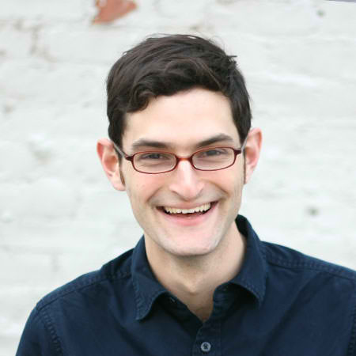
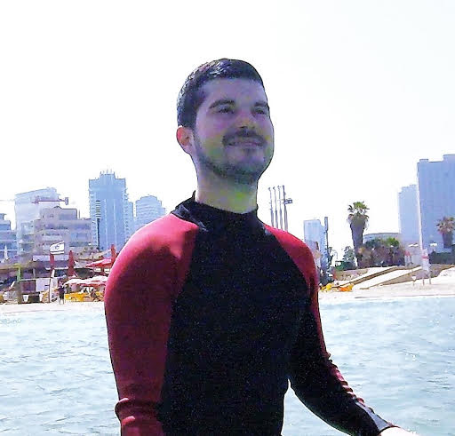

In this panel, we’ll hear industry viewpoints from organizations that approach the crowd from varying perspectives: A company focused on training machines in the most challenging of tasks (e.g., natural language understanding), another focused on elevating expert creativity and growth through automation, and a crowd work platform focused on elevating workers’ rights and status. The discussion will cover the following topics:

Co-Founder & CTO, B12
Adam Marcus is a cofounder and CTO of B12, a company whose focus is building a better future of creative and analytical work. Previously, Adam was director of data at Locu, a startup that was acquired by GoDaddy. He has written on crowdsourcing and data science, including coauthoring a book, Crowdsourced Data Management: Industry and Academic Perspectives. He is a recipient of the NSF and NDSEG fellowships and has worked at ITA, Google, IBM, and FactSet. Adam holds a Ph.D. in Computer Science from MIT, where he researched database systems and human computation. In his free time, he builds course content to get people excited about data and programming.

Software Developer, Microsoft Research Maluuba
Justin Harris is a software developer with 6+ years experience in NLP using machine learning and collecting data for various tasks. Justin has experience in ontological representations, classification, entity tagging, and implementing neural networks for production systems. Justin has done crowdsourcing using CrowdFlower and Mechanical Turk for Maluuba’s NLU system to understand a variety of intents and entities as well as question-answer collection for documents. He has also organized internal data collection for tasks including task oriented dialog collection.
Director of Product, B12
Daniela Retelny is the Director of Product at B12, a technology startup in New York City. Prior to B12, Daniela completed her Ph.D. in Management Science & Engineering at Stanford University where she was a Stanford Interdisciplinary Graduate Fellow and a member of the Stanford HCI Group and the Center for Work, Technology and Organization. At Stanford, Daniela's research focused on the design and appropriation of computational systems and coordination approaches for interdependent expert crowd work and globally distributed teams and organizations. Her dissertation on Flash Teams and Flash Organizations introduced computational approaches and organizational structures for on-demand expert crowd work. Daniela graduated from Cornell University with a B.S. with honors in Information Science. In the past, Daniela has also worked at Facebook, Wellcoin, IBM, SONY BMG.
Co-Creator, Daemo
Karolina Ziulkoski is an interactive artist, designer, and researcher. She holds a Master's degree from the Interactive Telecommunications Program at NYU and bachelor's degrees in Architecture (UFRGS, summa cum laude) and Advertising (PUCRS, Outstanding Student Award). Ms. Ziulkoski is a core contributor of Daemo, a Self Governed Crowdsourcing Marketplace, a project of the Stanford Crowd Research Collective, and an adjunct professor at Rutgers University Design program. Ms. Ziulkoski won the Inovapps award from the Brazilian Ministry of Communications for her AR app "Museum Without Walls", and the 2017 Communication Arts Interactive Award and 2017 Shortlist of the Fashion & Beauty Clio Award for "Wind", an interactive installation for the DKNY window display in Soho, NYC. Future Past News, an installation that uses augmented reality, has been exhibited at the New Museum and the 2017 SPRING/BREAK Art Show, and the online version is an honoree of the 2017 Webby Awards in the NetArt category. She was a Labmis resident at the Museum of Image and Sound of São Paulo with the project "Arquitetura Móvel" (Mobile Architecture). Her work blurs the boundaries between physical and digital, reducing the gap among both and crossing media barriers. Today she is a partner at Bolota, where she develops interactive installations, apps, online experiences, and exhibitions. They are currently working on the Museum of Municipalities, scheduled to open in 2018 in Brasília, Brazil. For two years she was a member of NEW INC, the New Museum's incubator for art, technology and design in New York City.